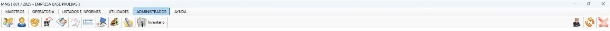
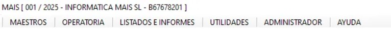

Asistente MAIS_IA
Resuelve tus dudas al instante hablando directamente con nuestro asistente basado en inteligencia artificial (Aegis).
Acceso y Primeros Pasos
Aprende los pasos fundamentales para iniciar sesión y conocer el entorno básico del sistema antes de comenzar a trabajar.
Desde el panel principal podrás acceder a todas las funciones. La navegación principal se organiza lógicamente de izquierda a derecha.

Accede a herramientas avanzadas como listados, datos maestros y utilidades de configuración.

Gestión y Facturación
Si has cometido un error al facturar o el cliente realiza una devolución, es vital saber cómo corregir una factura. En esta sección aprenderás a realizar abonos correctamente y generar documentos rectificativos legales sin errores.
Una correcta gestión del efectivo diario garantiza cuadres perfectos. Aquí abordamos la gestión del arqueo de caja, anotación de movimientos diarios y controles de efectivo al cierre de la jornada.
Contabilidad y Obligaciones
Entender los conceptos básicos y los procedimientos contables del día a día es crucial para la salud de la empresa. Repasa nuestra guía básica para no perder detalle.
Aprende a realizar un cierre de ejercicio correctamente en MAIS. Este proceso crítico asegura que todos los datos y saldos estén cuadrados y listos para operar en el nuevo año.
Recursos y Soporte
¿Tienes alguna incidencia técnica o duda específica? Nuestro equipo de soporte está a tu disposición en el siguiente horario laboral.
Descarga los manuales en formato PDF o accede a la galería completa de videotutoriales para profundizar en el manejo de la herramienta MAIS.